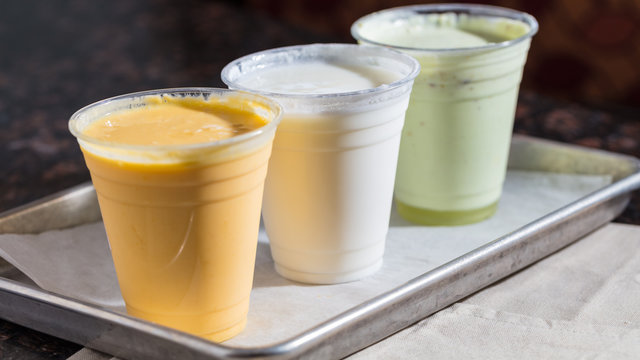

It has been scientifically proven that different fruit juices are beneficial for different health problems. Fruits have many such qualities and ingredients. Which play an important role in curing diseases. It is a well known fact that fruit juice is absorbent for health. A recent study in the United States has revealed which juice works best on which problem.

Lassi (pronounced [ləsːi]) is a regional name for buttermilk, the traditional dahi (yogurt)-based drink in the Indian subcontinent. Lassi is a blend of yogurt, water, spices and sometimes fruit. Namkeen (salty) lassi is similar to doogh, while sweet and mango lassis are like milkshakes. Lassi may be infused with cannabis in the form of bhang.